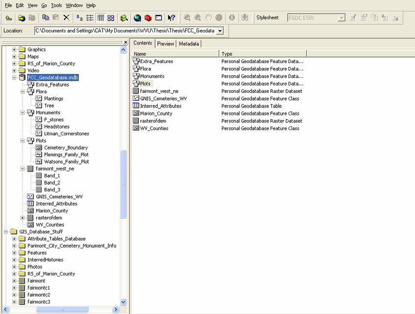
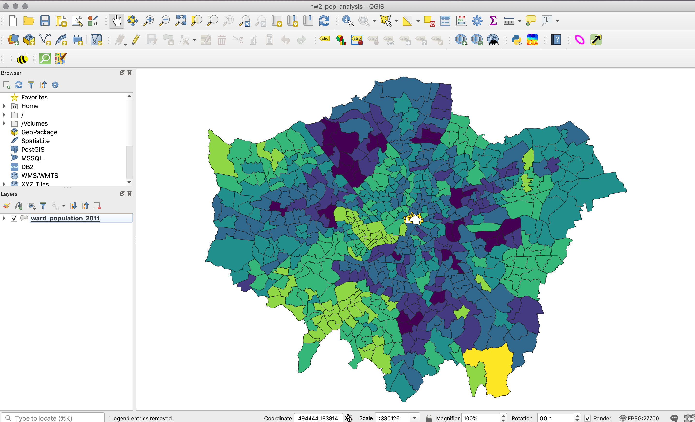

2 GIScience and GIS software
Welcome to Week 2 in Geocomputation!
I hope you have your favourite caffeinated (or not!) beverage at hand and some good concentration music because this will be a longer than usual week of work to get through - but if you concentrate, take your notes, and complete our practicals, it will hold you in good stead as you progress along our course.
As always, we have broken the content into smaller chunks to help you take breaks and come back to it as and when you can over the next week.
If you do not get through everything this week, do not worry. Week 3 will be shorter in content, therefore you will have time to catch up before the seminars at the start of Week 4.
Week 2 in Geocomp
This week’s content introduces you to foundational concepts associated with GIScience and GIS software.
Out of all our foundational concepts you’ll come across in the next four weeks, this is probably the most substantial to get to grips with - and has both significant theoretical and practical aspects to its learning.
This week’s content is split into 6 parts:
- What is Representation? (5 minutes)
- Geographic Representation (25 minutes)
- Spatial Structure, Sampling and Scale (25 minutes)
- Spatial Data Models (45 minutes)
- Spatial Data File Formats (20 minutes)
- Practical 1: Exploring Population Changes Across London (1 hour)
Videos can be found in Parts 2-5, alongisde Key and Suggested Reading and the first two of 3 assignments.
Video content this week is a mixture of short lectures from myself, and two videos from YouTube. The two explanations from YouTube summarise the content presented in this workbook succinctly and with some really interesting examples. Using these videos have allowed me to spend more time on your practical - including ensuring there is a practical for those of you who cannot download Q-GIS.
Part 6 is our Practical for this week, where you will be introduced to Q-GIS and apply the knowledge gained in the previous parts from Parts 1-5 in a practical setting. If you have been unable to download Q-GIS or cannot access it via Desktop@UCL Anywhere, we have provided an alternative browser-based practical.
Learning Objectives
By the end of this week, you should be able to:
- Understand how we represent geographical phenomena and processes digitally within GIScience
- Explain the differences between discrete (object) and continuous (field) spatial data models
- Explain the differences between raster and vector spatial data formats and their respective file types
- Know how to manage and import different spatial file types into a GIS software
- Learn how to use attributes to join table data to vector data
- Introduce you to the concept of an Administrative Geography (more next week!)
As stated above, there is a lot to go through in this week’s content - but everything you will learn this week will provide you with a comprehensive background for the following weeks in the module.
What is Representation?
To be able to conduct any spatial analysis using our GIS tools or software, we first need to establish how we capture the geographical features, processes and/or phenomena that we wish to study as digital data that is readable by ourselves and by our computers.
Coming to GIScience, at this point of time in its development, we often take this above statement for granted – we are, as mentioned last week, surrounded by geographical (and social) data, where much of this conceptual work has been done and, as a result, is often hidden from us as users of this data and/or technology.
We can, for example, access data on every single train station in England - we can download this data directly from OpenStreetMap.
But you’ll have a choice - depending on how you wish to represent your train stations, which is usually determined by your work purpose.
For example, are you looking to show the distribution of stations over England? Do you therefore download the train stations as individual points that you could label with their name?
However, is this truly enough to represent a “train station” - surely, you might want to have the building instead, because this is the actual “station” itself? But then again, is this still enough? Do you need to have the components that constitute a train station - the railway tracks, the ticket office (or ticket stations more common now!), and even the waiting room - to truly represent every train station in England?
In our case example, when looking only at the distribution of train stations, a point representation is likely to be sufficient enough - but this representation does not tell us much about the size and service area of each of the stations - or much else about them!
We often do not think nor question the representations used to present data to us when we use or interact with spatial data - until, for example, we see something wrong that does not fit with our expectations or does not contain the information we want or expect for our purpose.
Often, at times, representations can also be misleading, if the right information is not conveyed - or conveyed in the wrong way.
However, as you’ll find out below, we often need to weigh up including too much detail in our representations, particularly if this detail is redundant to the information we wish to convey.
We therefore use representations to convey information about something in the real world - but these representations almost always simplify the truth.
We simply can’t fit every piece of information about the world around us within a representation - we have to select what bits are most important and relevant to what we are trying to convey.
What this also means is that for these representations to mean something to us (i.e. can be interpreted), they need to fit this information into a standard form or model that we have come to expect in their representation.
In our case above, we are able to associate a point on a map as a point of interest - and understand the distribution of the train stations thusly - because this has become the most dominant way to represent the location of an entity in a simple format on a map.
As a result:This includes:
How to “view” the world around us in ways that lend themselves to be modelled by digital data.
How to “sample” the world around us to be able to model these “views” as digital data.
How to structure these models as digital data to facilitate their processing and analysis.
How to create standardised formats to store and share these digital data across programs, software and computers.
As a result, there are established rules, and classification schema (“models”) to how we represent geographic pheonomena and processes, which you will learn about today.
Definitions
Epistemological: ‘what we know and how we can know it’ - the theory of how a piece of knowledge has come into being, including the methods behind generating its “truth” and the validity of these methods, the belief in this truth, and the justification of holding these beliefs.
Ontological: ‘studying what there is’ – questioning how we see our reality and categorise it in order to determine how things come into being.
Geographic Representation
To be able to convert the world around us into digital geographic data, we first need to understand how we can represent the features, processes and phenomena we may want to study.
As Longley et al (2015) explain:
“Representations help us assemble far more knowledge about the Earth than is possible on our own…They are reinforced by the rules and laws that we humans have learned to apply to the unobserved world around us.”
As outlined above, increasingly due to our use of digital technology, this representation itself is rarely seen or really understood by the users of the data – only those creating the data are likely to ever see its individual elements and/or components.
But behind the data that you’ll become familiar with over the course of this module, there are significant and specific decisions that have been made, which you should be aware of in order to understand these data (and their limitations) fully.
One of the major developments in GIScience was the creation of representations that can capture the different types of geographic phenomena and processes around us - which could then ultimately be modelled and turned into digital data.
These representations view the world in two fundamental ways: as discrete objects and as continuous fields.
In summary, the discrete object view represents the geographic world as objects with well-defined boundaries, within larger objects of well-defined boundaries, in otherwise empty space, i.e. similar to our reference mapping schematisation.
In comparision, the continuous field view represents the real world as a finite number of variables, that can each be defined at every possible position to create a continuous surface of the respective variable.
The following short video outlines these in more detail, with examples:
Understanding how to represent the world around us
When representing and modelling many features, the boundaries are not often clearly continuous or discrete. A continuum is created in representing geographic features, with the extremes being pure discrete and pure continuous features.
Most features fall somewhere between the extremes. An example could be looking at edges of forest and trying to define their boundaries – does the boundary stop at the tree trunk or the diffuse layering of leaves?
This question actually poses itself to even the most experienced of GIS-ers and cartographers! David Garcia (aka Mapmaker David) is a Filipino Geographer and Cartographer and someone who I would highly advocate following on Twitter. He often raises a lot of questions about the epistemological and ontological aspects of GIScience and their development from essentially cartography and the role this has in minimising indigenous knowledge - he also makes beautiful maps. This critical approach to GIScience is something that we’ll look into a bit more in Week 5, in order to have time to give this content due justice!
Assignment 1: Discrete Objects and Continuous Fields
Let’s think about spatial representation models in more detail.
Below are links to four spatial datasets that I’d like you to think about whether they represent discrete objects or continuous fields.
Click on each link and note down your answer - I’ll be asking for these in our seminar in Week 4:
| Dataset | Spatial Model Type |
|---|---|
| USA Tree Canopy Cover | ? |
| Global Land Cover | ? |
| OS Open Rivers | ? |
| World Population Density Estimate | ? |
Ultimately though, continuous fields and discrete objects only define two conceptual views of geographic phenomena, but do not solve the problem of digital representation, i.e. how do we capture this representation using computers.
A continuous field view still potentially contains infinite amount of information as it aims to defines the values of the variable at every point – and there are an infinite number of points in any defined geographic area. In contrast, discrete objects can also require an infinite amount of information in order to provide a full description (e.g. our train station dataset above!).
Neither of these approaches are designed to deal with the limitations of computers and the need to store this representation digitally - for this, we need to understand the spatial structure of the phenomena or process at study alongside the scale at which we want to represent them in order to devise a sampling scheme behind our data creation.
Spatial Structure, Sampling and Scale
Why do we need to sample our data? Well – if we try to include everything in our representation, we’d end up with a map the size of the world, which would be pretty useless!
This issue is quite eloquently expressed by the Argentine writer, Jorge Luis Borges, who made up a fictional short story of the issue of an Empire aiming to create a map that was so perfect it could represent the whole empire - because it was the size of the Empire itself, coinciding point for point. As a result, the map, whilst perfect, was useless and was offered up to the elements to essentially destroy by the following generations!
A short story on the issue of representation in science, geography and map-making
On Exactitude in Science
Jorge Luis Borges, Collected Fictions, translated by Andrew Hurley.
…In that Empire, the Art of Cartography attained such Perfection that the map of a single Province occupied the entirety of a City, and the map of the Empire, the entirety of a Province. In time, those Unconscionable Maps no longer satisfied, and the Cartographers Guilds struck a Map of the Empire whose size was that of the Empire, and which coincided point for point with it. The following Generations, who were not so fond of the Study of Cartography as their Forebears had been, saw that that vast Map was Useless, and not without some Pitilessness was it, that they delivered it up to the Inclemencies of Sun and Winters. In the Deserts of the West, still today, there are Tattered Ruins of that Map, inhabited by Animals and Beggars; in all the Land there is no other Relic of the Disciplines of Geography. —Suarez Miranda, Viajes de varones prudentes, Libro IV,Cap. XLV, Lerida, 1658 (Borges’ fictional character of “the time”)
Find more here: There is No Perfect Map by Marcelo Gleiser (5 mins) and Why a 70 year-old short story goes to the heart of modern map making by Ian Delaney (3 mins).
To be able to create accurate representations of our geographic phenomena and processes, we therefore need to find a way to sample our phenomena or process to reduce the information whilst still retaining the most important pieces of information.
You have probably come across the concept of sampling before when it comes to surveys and statistics and the need to create samples from a population. In this case, whenever we look to derive an accurate sample from a population, we look to create a sample frame or scheme to extract statistically significant information.
In your previous research experience, you may have come across the ideas of random, systematic and stratified sampling - and that you choose the sampling approach that most reflects the likely structure or distirbution of the population you are targeting to sample.
We can think of converting our geographic representations into digital data as a similar kind of sample, in that the elements of reality that are retained are abstracted from the observable real-world in accordance with some overall design.
Therefore, to create digital data from our representation, we need to design a way to sample it. To do this, we first need to understand the structure of the data in order to deduce a good ‘sampling strategy’.
The next lecture in this workshop provides an introduction to how we can use the structure of spatial data to determine appropriate sampling schemes.
Understanding the structure of spatial data to determine sampling schemes
When looking at the representation of geographic phenomena as digital data, the scale and level of detail of that is needed for the analysis will therefore determine the spatial sample design and how we can then generalise from these measurements.
As a result, scale and level of detail are key to building appropriate representations of the world.
Assignment 2: Digitising the River Thames, London, U.K
We can put these ideas into practice by thinking about how we could create our own digital data.
Let’s take what should be a straight-forward example of digitising the River Thames in London.

We’re going to use a very light online tool that allows us to create digital data (and as you’ll see later in the workshop, export the data we create as actual raw files).
Head to geojson.io - it should load directly, zoomed into London.
In the bottom left-hand corner, select Satellite as your map option.
Next, click on the
Draw a Polylinetool:

Now digitise the river - simply click from a starting point on the left- or right-hand side of the map, and digitise the whole river.
Once you’re done, simply double-click your final point to end your line.
You can then click on the line and select
infoto find out how long the line is.For this assignment, I’d like you take a screenshot of you final line. When you click on the line, you can use
Propertiesto style the line to make it more visible, e.g. change the colour and the width of the line.Please then post your screenshot on a new slide in your respective group’s Powerpoint you can find here and add a text-box stating how long your line is (in Km) (don’t worry, you don’t need to add your name).
We’ll look at each other’s digitisation attempts during our seminar this week – but the questions to think about are:
- How easy did you find it to digitise the data and what decisions did you make in your own ‘sample scheme’?
- How close together are your clicks between lines?
- Did you sacrifice detail over expediency or did you spend perhaps a little too long trying to capture ever small bend in the river?
- How well do you think your line represents the River Thames?
In the activity above, we were looking at the river as a discrete field – imagine then if I asked you to find a way to collect data on and then digitise the air quality over the same area of London? How would you go about creating an appropriate sample scheme to accurately represent air quality – without spending too much time on collecting the data that is becomes almost redundant?
In both of these scenarios, you are using your a priori knowledge of the spatial structure of the phenomena to determine your spatial sampling scheme. However, in some scenarios, we may not know this structure before sampling nor can you always control for all variations in all characteristics.
When looking to record a phenomenom as digital data at a fine scale, i.e. a high spatial resolution, we need to ensure our sample scheme reflects the minimal variation in the spatial autocorrelation with a feature. To record digital data at a coarse scale, i.e. a low spatial resolution, we can be more flexible with our sample scheme – but should ensure it reflects larger changes within our phenomenom.
Whilst ideally we would want to capture our representation in as fine scale as possible as this is likely to be the most accurate, this sometimes can be detrimental to our capturing and storage of the representation as digital data (see the next section).
Ultimately, a sampling scheme will be a best guess: we must remember that GIScience is about representing spatial and temporal phenomena in the observable world, and because the observable world is complicated (and does not always adhere to Tobler’s principles), this task is difficult, error prone, and often uncertain.
As a result, with any data you use from other sources, always remember to consider its quality, accuracy and precision in representing geographic phenomena.
Key Reading(s)
Book (30 mins): Longley et al, 2015, Geographic Information Science & Systems, Chapter 2: The Nature of Geographic Data.
Computational considerations of the impact of scale and sampling
One final thing to note when it comes to sampling spatial data at various scales is that if we try to sample and study complex phenomena at fine spatial resolutions but over significant extents, we may ultimately create many issues from a computational perspective.
Whilst we may be able to sample our spatial phenomenon at a increasingly fine detail (e.g. satellite imagery can now collect data at less than a meter precision), this data ultimately has to be stored digitally.
As a result, when looking to use increasing levels of precision over vast scales in terms of spatial coverage/extent, we can inadvertently create substantially large datasets that computers can struggle to visualise and process.
As a result, we need to be conscientious about the data we are trying to create and use - for example, the Ordnance Survey’s MasterMap topography layer contains 400 million individual features (i.e. records). Trying to load even a subset of this on your computer can often cause significant processing problems!
Usually, this means you have a choice.
You can study something at a fine resolution, but you’ll need to keep your spatial coverage small.
In comparison, you can expand your coverage if you reduce the resolution of your data.
This all depends on the computational processing capability and capacity you have at your disposal, as well as what you are trying to achieve with your analysis, i.e. what detail do you need to answer your research questions.
In addition, generalising is a key approach within GIScience that focuses on removing detail that is unnecessary for an application, in order to reduce data volume and speed up our processing.
There are many approaches to generalising spatial data, which we come across in more detail over the coming weeks including simplification, smoothing, aggregation and amalgamation.
Ultimately, we need a priori information to inform our understanding of whether our sampling scheme and resulting digital data is suitable for our analysis, i.e. it is accurate enough without hindering processing power.
Determining an appropriate sampling scheme and resulting method of capturing this representation as digital data will therefore be determined by the phenomenom at study – and the limitations of those using and processing the resulting data.
Spatial Data Models
We can now see how we convert the observable world around us into spatial representations – and how we then need to consider scale and level of detail, alongside spatial structure, to determine our spatial sampling scheme.
The next step is to convert our sampled observations (how ever they are collected) into digital data.
Digital data at its basics is a form of binary data entry: the representation system in digital computers uses only two numbers (0 and 1).
As a result,
“Every item of useful information about the Earth’s surface is ultimately reduced by a GI database to some combination of 0s and 1s.”
Longley et al, 2015
To create our modern day digital geographic data, we need to devise spatial formats that can ultimately be ‘written’ (or rather, ‘coded’) using this binary entry.
Many of these decisions formed much of Roger Tomlinson’s original body of work (and others!).
In this thesis, he outlined how to capture “real world data elements” as digitised geometries (points, lines, polygons) and grids - and how to store them in a coded digital format:
These formats are the basis to the two main spatial data models we use.
These are called raster and vector data formats, which are explained in further detail in this short video:
Raster and Vector Spatial Data
The below text summarises what was presented in the above video.
Raster Data Format
A raster dataset is a pixel-based grid data format. For any variable studied, a grid is created within which each pixel represents a value or measure for the variable:

Raster data only contain a single “attribute” for the variable it represents – and the attribute will be coded according to the data measurement scale and attribute type (see below).
Rasters are primarily stored as a type of image file, that is either geo-referenced (e.g. a GeoTIFF) or comes with an additional georeferencing file (normally called a World file).
Vector Data Format
In comparison, vector data contains geometries: the points, lines and polygons we’ve seen earlier in the workshop.
To provide the “geographic” component of these geometries, they actual geometry itself is specified using a pair of coordinates, preferably assigned to a specific coordinate reference system (the below diagrams simply use a graph!):
As you can see, the three types of vector geometries are:
- A point dataset, which will have at least a single pair of coordinates for each point (or more generally “record”) within its dataset
- A single line, which will have two pairs of coordinates, whilst a polyline (multiple lines connected together) will have a minimum of three pairs.
- A polygon, which will have a minimum of three pairs (forming some sort of triangle!).
Alongside containing these geometries, a vector dataset can also contain multiple attributes for each the records it contains.
These attributes are stored in what is known as an Attribute Table.
An Attribute Table consists of a set of records/observations (the rows) and attributes/fields (the columns):

Each record within the dataset will refer to one point, polygon or line (polyline) and will contain a value for each attribute/field that is part of the dataset.
This includes a geometry field, which will contain the coordinates required to map and display the dataset correctly within its Coordinate Reference System (CRS) - more on these next week.
The use of “field” for attribute tables
At this point, it is important to note that you should not confuse the use of field here with our previous use of field in terms of spatial representation models. ‘Field’ and ‘scale’, as you can tell, have many meanings when used in GIS – but the more you come across the terms within context, the easier you’ll find it to understand which meaning is being referred to!
These attributes will be stored in the field as a specific attribute measurement scale and as a specific data type - depending on the variable or data that they represent.
Attribute Data Measurement Scales and Types
For any data, whether spatial or not, it will collected against a specific measurement scale and, in its digital form, be stored as a specific type of data type.
This measurement scale is a classification that describes the nature of the information of the values assigned to the specific variables.
Data can be:
| Measurement Scale | Explanation |
|---|---|
| Nominal | Has labels without any quantitative value. |
| Ordinal | Has an order or scale. |
| Interval | Numeric and have a linear scale, however they do not have a true zero and can therefore not be used to measure relative magnitudes. |
| Ratio | Interval data with a true zero. |
In addition, data may also be:
| Measurement Scale | Explanation |
|---|---|
| Binary | Can have only two possible outcomes, yes and no or true and false, etc. |

For example, for our point data set of train stations mentioned earlier:
- A field that contains the name of each train station would be nominal data.
- A field that details the class of the train station, e.g. whether it is a mainline, secondary or tertiary line as a type of order or rank, would be ordinal data.
- A field that details the temperature of the train station in celsius would be interval data
- A field that details the number of tracks the station contains would be ratio data
- A field that details whether the station is operational or not could be binary data (a ‘yes’ or ‘no’ or ‘operational’ or ‘non-operational’)
Depending on the measurement scale, the attribute data will be stored as one of several data types:
| Type | Stored Values | Character Formats |
|---|---|---|
| Short integer | -32,768 to 32,768 | Whole numbers |
| Long integer | -2,147,483,648 to 2,147,483,648 | Whole numbers |
| Float | -3.4 * E-38 to 1.2 E38 | Real numbers |
| Double | -2.2 * E-308 to 1.8 * E308 | Real numbers |
| Text | Up to 64,000 characters | Numbers, letters and words |
Knowing your measurement scale and data type level are essential to working accurately and effectively with spatial data.
If you inadvertently store a float (e.g. values of 1.021, 1.222, 1.456, 1.512, 1.888) as an integer, your number will be rounded (e.g. it would become: 1, 1, 1, 2, 2) which can impact the accuracy of your work.
Conversely, while storing whole numbers (integers) as a float or a double would not have an accuracy issue, it will come at a computational cost in terms of storage space. This may not be a big deal if the dataset is small, but if it consists of tens of thousands of records the increase in file size and processing time may become an issue.
Being aware of (and checking!) your data types can also help solve initial bugs when loading and trying to analyse or visualise data in both GIS software and programming.
For example, one commmon issue with data types when using table data within Excel prior to ingesting your data a GIS software or program is that Excel often converts British National Grid coordinate codes (which are integers) into text - therefore, when you come to display your point data, for example, by their coordinates, this field is not readable by your software or program.
You therefore need to force your program to recognise that field as a numeric field - we’ll come across this issue and ways to solve it in Week 5.
In addition to these attributes that contain variable information that might be used for analysis or visualisation purposes, each record should contain its own ID that will be used for indexing purposes in both GIS software and programming. This can help you select certain rows for analysis or order your data.
Finally, in some cases, a dataset may contain a unique identifier (UID) for each record that can be used for data management purposes. These UID can be used to match with another dataset containing the same UID.
In this latter scenario, this helps us join data that we may download as table data (e.g. a spreadsheet of population numbers for the different wards in London) with spatial data (e.g. a spatial dataset that shows the outlines of the wards in London) to create a new spatial dataset that contains the population data as an attribute, ready for its analysis and/or mapping. We’ll see this in action in today’s pratical.
Rasterising vector and vectorising raster
One additional thing to know about vector and raster data is that, in some cases, it is possible for both data formats to represent the same geographic feature, process or phenomena – but how they do so will look very different:

And also each data models comes with both advantages and limitations:
There are also tools within our GIS software and programming software that will allow us to convert between the two data formats.
This can be of use when we wish to process data faster (e.g. rasterising vector data) or we wish to add attributes to what was a continuous field (i.e. vectorising raster) for analysis.
There will, of course, be considerations and limitations when switching between data formats, such as loss of accuracy in either direction of conversion.

Left image: DEM, Right image: vector version. Image: Esri.
You will find more information on Spatial Data Models and the raster and vector data formats in the following two chapters in the Geographic Information Science & Systems (GISS) book:
Key Reading(s)
Book (15 mins): Longley et al, 2015, Geographic Information Science & Systems, Chapter 3: Representing Geography.
Book (15 mins): Longley et al, 2015, Geographic Information Science & Systems, Chapter 7: Geographic Data Modeling.
Spatial Data File Formats
The final part to our introduction to spatial data is understanding the different file formats in which spatial data is stored.
There are a number of commonly used file formats that store vector and raster data that you will come across during this course and it’s important to understand what they are, how they represent data and how you can use them.
Shapefiles
Perhaps the most commonly used spatial data file format is the shapefile.
Shapefiles were developed by ESRI, one of the first and now certainly the largest commercial GIS company in the world. Despite being developed by a commercial company, they are mostly an open format and can be used (read and written) by a host of GIS Software applications.
A shapefile is not a single file, but a collection of files of which at least three are needed for the data to be displayed in GIS software.
The files include:
| File Type | Description | Required? |
|---|---|---|
.shp |
Contains the feature geometry | Mandatory |
.shx |
Index file which stores the position of the feature IDs in the .shp file |
Mandatory |
.dbf |
Stores all of the attribute information associated with the records | Mandatory |
.prj |
Contains all of the coordinate system information. Data can be displayed without a projection, but the .prj file allows software to display the data correctly where data with different projections might be being used. |
Optional, but important |
.xml |
General metadata | Optional, but important |
.cpg |
Encoding information | Can also be included |
.sbn |
Optimization file for spatial queries | Can also be included |
This is one of the main criticisms of the shapefile – it is easy to lose files and as a result render your data useless. Other GIS formats such as GeoJSON and the increasingly popular GeoPackage include all of this information in a single file, reducing this risk substantially of this happening. Despite these issues, the shapefile still remains an ever-popular GIS format, and one you’ll use the most in this course.
On Twitter and want to see the love for shapefiles….have a look at the shapefile account:

GeoJSON
GeoJSON (Geospatial Data Interchange format for JavaScript Object Notation) is becoming an increasingly popular spatial data file, particularly for web-based mapping as it is based on JavaScript Object Notation. Unlike a shapefile in a GeoJSON, the attributes, boundaries and projection information are all contained in the same file.
Comparing Shapefile and GeoJSON file formats
If you would like, you can explore a shapefile (.shp ) and GeoJSON (.geojson) in action - we’ll use the light digitising tool, that we used earlier to digitise the River Thames:
2. Using the drawing tools to the right of the map window, create 3 objects: a point, line and a polygon as shown above. Click on your polygon and colour it red and colour your point green.
Using the ‘Save’ option at the top of the map, save two copies of your new data – one in
.geojsonformat and one in.shpformat.- Open your two newly saved files in a text editor such as notepad or notepad++ on your computer.
- For the shapefile you might have to unzip the folder then open each file individually.
What do you notice about the similarities or differences between the two ways that the data are encoded?
I won’t ask you about this in our seminar, but it’s a good way to start getting familiar with the actual structure of our data.
If you do end up having issues with your datasets, this may give you an idea of where you might find out if there’s an issue with your raw data itself.
Geodatabase
A geodatabase is a collection of geographic data held within a database. Geodatabases were developed by ESRI to overcome some of the limitations of shapefiles.
They come in two main types: Personal (up to 1 TB) and File (limited to 250 - 500 MB), with Personal Geodatabases storing everything in a Microsoft Access database (.mdb) file and File Geodatabases offering more flexibility, storing everything as a series of folders in a file system.
In the example below we can see that the FCC_Geodatabase (left hand pane) holds multiple points, lines, polygons, tables and raster layers in the contents tab.

GeoPackage

A GeoPackage is an open, standards-based, platform-independent, portable, self-describing, compact format for transferring geospatial data. It stores spatial data layers (vector and raster) as a single file, and is based upon an SQLite database, a widely used relational database management system, permitting code based, reproducible and transparent workflows. As it stores data in a single file it is very easy to share, copy or move.
Raster Data
Most raster data is now provided in GeoTIFF (.tiff) format, which stands for Geostationary Earth Orbit Tagged Image File. The GeoTIFF data format was created by NASA and is a standard public domain format. All necesary information to establish the location of the data on Earth’s surface is embedded into the image. This includes: map projection, coordinate system, ellipsoid and datum type.
Other Data Formats
The aforementioned file types and formats are likely to be the ones you predominately encounter. However there are several more used within spatial analysis.
These include:
Vector
- GML (Geography Markup Language —- gave birth to Keyhold Markup Language (KML))
- SpatialLite
- PostGIS
Raster
- Band SeQuential (BSQ) - technically a method for encoding data but commonly referred to as BSQ.
- Hierarchical Data Format (HDF)
- Arc Grid
There are normally valid reasons for storing data in one of these other file formats, however you do not need to read or know about these for now!
In the end, the variety of data formats can be a bit overwhelming. But don’t worry, most of the time in this course you’ll be using shapefiles, table (in the form of csvs) or raster data.
Table Data: Comma Separated Values (.csv) v. Excel Spreadsheet (.xls)
In addition to spatial data, you will find that in this module (and for your dissertations), you will download and use a lot of table (tabular/spreadsheet) data.
When you download this data, you can first inspect that data in Excel or Numbers (or another spreadsheet application of your choice), prior to loading it into either GIS software or programming software (such as R-Studio).
The reason why is a lot of the time, you will need to clean this dataset prior to using it within these software/programs. Often the data comes formatted with too many rows, additional formatting, or generally just a lot of additional stuff we just don’t need. We’ll take a deeper look at this need for cleaning in Week 4 as we tackle using R-Studio.
One thing to note though is that there are differences between a csv and an Excel spreadsheet, particularly if the latter is contained in a Workbook. There are a few summaries of these differences available online and we will go over the differences in further detail again in Week 4.
For now, please be aware that we will be using csv as our default table data format, so if you need to save anything at any point in our practical, please save your file as a csv.
GIS Software - a more thorough introduction (moved to Week 5)
As outlined last week, this week, we were going to provide you with a more thorough introduction to the different types of GIS software available to you - but we’ve decided that you’ve read/listened/learned enough about spatial data that more information on GIS software is not going to help.
Instead, we’ll cover this in Week 5 and now move onto our Practical.
If you’d like to get ahead, you can read the following chapter in GISS:
Book (15 mins): Longley et al, 2015, Geographic Information Science & Systems, Chapter 6: GI System Software.
Practical 1: Exploring Population Changes Across London
The first half of this workshop has given you an in-depth introduction into how we can represent the world around us and turn it into digital geographic data – and how we store this data from a technical perspective.
The practical component of the week puts some of these learnings into practice with an exploration of population data within London.
The datasets you will create in this practical will be used in Week 3 practicals, so make sure to follow every step and export your data into your working folder at the end.
The practical component introduces you to attribute joins. You’ll be using these joins throughout this module, so it’s incredibly important that you understand how they work – even as simple as they may be!
If you can’t access Q-GIS for this practical…
For those of you who have been unable to access Q-GIS through your own computer or Desktop@UCL Anywhere, we have provided an alternative browser-based practical, which requires you to sign-up for a free but temporary account with ArcGIS Online. You will first need to complete this first half of the practical on this page - there is a link later on in our practical to the alternate tutorial at the point at which you’ll need to switch.
A Typical Spatial Data Analysis Workflow
When using spatial data, there is generally a very specific workflow that you’ll need to go through - and believe it or not, the majority of this is not actually focused on analysing your data.
Along with last week’s “80% of data is geographic data”, the second most oft-quoted GIS-related unreferenced ‘fact’ is that anyone working with spatial data will spend 80% of their time simply finding, retrieving, managing and processing the data – before any analysis can be done.
One of the reasons behind this need for a substantial amount of processing is that the data you often need to use is not in the format that you require for analysis.
For example, for our investigation, there is not a ‘ready-made’ spatial population dataset (i.e. population shapefile) we can download to explore popuation change across England:
Instead, we need to go and find the raw datasets and create the data layers that we want. As a result, before beginning any spatial analysis project, it is best-practice to think through what end product you will ultimately need for your analysis.
A typical spatial analysis workflow usually looks something like this:
- Identify the data you need to complete your analysis i.e. answer your research questions.
- This includes thinking through the scale, coverage and currency of your dataset.
Find the data that matches your requirements - is it openly and easily available?
Download the data and store it in the correct location.
Clean/tidy the data - this may be done before or after ingesting your data into your chosen software/program.
Ingest/load the data into your chosen software/program.
Transform & process the data - this may require re-projection (next Week), creating joins between datasets, calculating new fields and/or creating selections of the data that you want to work with (Week 5).
Run Analysis on your data, whatever technique you are using.
Visualise your data and results, including maps, graphs and statistics.
Communicate your study and outputs - through good write-ups and explanations of your visualisations.
As you can see, the analysis and visualisation part comes quite late in the overall spatial analysis workflow - and instead, the workflow is very top-heavy with data management.
Often in GIS-related courses, you’ll often be given pre-processed datasets ready to go ahead with analysing the data. Instead, we’re going to start cleaning (the majority of) our data from the get-go.
This will help you understand the processes that you’ll need to go through in the future as you search for and download your own data, as well as deal with the data first-hand before ingesting it within our GIS software.Good thing you’ll be learning a lot about these aspects over the coming weeks!
Setting the scene: why investigate population change in London?
For this practical, we will investigate how population has changed over the last ten years in London.
Understanding population change - over space - is spatial analysis at its most fundamental.
We can understand a lot just from where population is growing or decreasing, including thinking through the impacts of these changes on the provision of housing, education, health and transport infrastructure.
We can also see first-hand the impact of wider socio-economic processes, such as urbanisation, or, in the case of the predicted population movements currently, relocation of a certain demographic of urban dwellers to rural areas.
For us, the aim for our practical is to actually create population data for London in 2011, 2015 and 2019 at the ward scale that we can use within our future analysis projects, starting next week.
This data will be used in our future practicals to normalise certain data, such as the crime datasets for next week.
Why do we need to normalise by population?
When we record events created by humans, there is often a population bias: simply, more people in an area will by probability lead to a higher occurrence of said event, such as crime. We’ll look at this in greater detail next week.
Finding our datasets
In the U.K, finding authoritative data on population and Administrative Geography boundaries is increasingly straight-forward.
Over the last ten years, the UK government has opened up many of its datasets as part of an Open Data precedent that began in 2010 with the creation of data.gov.uk and the Open Government Licence (the terms and conditions for using data).
Data.gov.uk is the UK government’s central database that contains open data that the central government, local authorities and public bodies publish. This includes, for example, aggregated census and health data – and even government spending.
In addition to this central database, there are other authoritative databases run by the government and/or respective public bodies that contain either a specific type of data (e.g. census data, crime data) or a specific collection of datasets (e.g. health data direct from the NHS, data about London). Some portals are less up-to-date than others, so it’s wise to double-check with the ‘originators’ of the data to see if there are more recent versions.
For our practical, we will access data from three portals:
For our administrative boundaries, we will download the spatial data from the London Datastore (which is exactly what it sounds like!).
For population, we will download table data from the Office of National Statistics (ONS) (for 2019 data to represnt 2020) and the London Datastore (only contains these data until 2018).
In our extension activity (available later this week), we will also download a gridded spatial dataset showing how population can be represented in the raster data format from the Worldpop research group at the University of Southampton.
Download and process datasets
The first step in our practical is to download and process our two main datasets: administrative geography boundaries and population.
Administrative Geography Boundaries
For our administrative boundaries, we’ll download the ‘Statistical GIS Boundary Files for London’ dataset(s) found in the London Datastore.
- Navigate to the datasets, here: https://data.london.gov.uk/dataset/statistical-gis-boundary-files-london.
If you navigate to this page, you will find multiple choices of data to download.
- We wil need to download the all three zipfiles: statistical-gis-boundaries-london.zip, London-wards-2014.zip and London-wards-2018.zip.
- The first dataset contains ALL levels of London’s administrative boundaries.
- In descending size order: Borough, Ward, Middle Super Output Area / MSOA, Lower Super Output Area / LSOA, and Output Area / OA) from 2011.
- The second dataset contains an UPDATED version of the Ward boundaries, as of 2014.
- The third dataset contains an UPDATED version of the Ward boundaries, as of 2020.
- The first dataset contains ALL levels of London’s administrative boundaries.
As we will be looking at population data for 2015 and 2020, it is best practice to use those boundaries that are most reflective of the ‘geography’ at the time; therefore, we will use these 2014 / 2018 ward boundaries for our 2015 / 2020 population dataset respecitvely.
When downloaded, depending on your operating system, the zip may unzip itself (or you may need to do this manually).
When open, you’ll find two folder options: Esri and MapInfo. These folders contain the same set of data, but simply in two data formats: Esri shapefile and MapInfo TAB.
MapInfo is another proprietary GIS software, which has historically been used in public sectors services in the UK (and many councils still use the software!), although has generally been replaced by either Esri’s Arc ecosystem or open-source software GIS. The TAB format is the main format that the software uses for vector data, similar to Esri and its shapefile format.
In your
GEOG0030/data/raw/folder, create a new folder calledboundaries. Within this folder, create three new folders:2011,2014and2018.- Copy the entire contents of
Esrifolder of each year into their respetive year folder within your newboundariesfolder:- Note, we do not want to add the additional
Esrifolder as a step in our file sytem. - I.e. your file path should read:
GEOG0030/data/raw/boundaries/2011for the 2011 boundaries, andGEOG0030/data/raw/boundaries/2014for the 2014 boundaries etc.
- Note, we do not want to add the additional
- We now have our Administrative Geography files ready for use. We will ingest these directly into Q-GIS and do not need to do any cleaning at this stage.
What are wards and boroughs? A short introduction to Administrative Geographies.
Put simply, administrative geography is a way of dividing the country into smaller sub-divisions or areas that correspond with the area of responsibility of local authorities and government bodies.
These administrative sub-divisions and their associated geography have several important uses, including assigning electoral constituencies, defining jurisdiction of courts, planning public healthcare provision, as well as what we are concerned with: used as a mechanism for collecting census data and assigning the resulting datasets to a specific administrative unit.
Administrative areas ensure that each public body has a clearly defined area of responsibility, which can be measured and budgeted for appropriately. They originate from the Roman era who used these geographies, usually defined by topographical and geographical features, to administer these regions including collecting the relevant tax from those living in these areas.
These geographies are updated as populations evolve and as a result, the boundaries of the administrative geographies are subject to either periodic or occasional change. For any country in which you are using administrative geographies, it is good practice therefore to research into their history and how they have changed over the period of your dataset.
In the modern spatial analysis, we use administrative geographies to aggregate individual level data and individual event data. One of the motivations for this is the fact that census data (and many other sources of socio-economic and public health data) are provided at specific administrative levels, whilst other datasets can often be easily georeferenced or aggregated to these levels.
Furthermore, administrative geographies are concerned with the hierarchy of areas – hence we are able to conduct analyses at a variety of scales to understand local and global trends.
The UK has quite a complex administrative geography (see more here), particularly due to having several countries within one overriding administration and then multiple ways of dividing the countries according to specific applications.
For the majority of your practicals, we will be keeping it simple with a focus on London, which is divided into:
- Boroughs -> Wards
OR
- Boroughs –> Middle Super Output Areas -> Lower Super Output Areas -> Output Areas.
We’ll be looking at wards in our practical analysis – although even at this fine scale, the City of London is a little pesky and introduces complexities into our analysis, which we’ll see.
We’ll learn more about Administrative Geographies next week.
Population Datasets
For our population datasets, we will use the ONS mid-year estimates (MYE). These population datasets are estimates that have been modelled based on the previous 2011 census count and then forecasted population growth (plus some additional data).
They are released a year, with a delay of a year, i.e. we can only access data for 2019 at the moment, so we’ll use this as our most recent year.
As the London Datastore only has these MYE for up to 2018, we’ll need to download the data from ONS directly. It’s always worth checking the ‘originators’ of the data to see if there are more recent versions.
- Navigate to the Ward level datasets: https://www.ons.gov.uk/peoplepopulationandcommunity/populationandmigration/populationestimates/datasets/wardlevelmidyearpopulationestimatesexperimental
When you navigate to this page, you will find multiple choices of data to download.
We will need to download the estimates for 2011, 2015 and 2019. Click to download each of the zipfiles. Choose the revised versions for 2015 and the (Census-based) on 2011 wards edition for 2011.
In your
GEOG0030/data/raw/folder, create a new folder calledpopulationand copy the three spreadsheets into this folder.
Now it’s time to do some quite extensive data cleaning.
- Click on the Mid-2011 Persons tab and have a look at the data.
- As you should be able to see, we have a set of different fields (e.g. Ward Code, Ward Name), including population statistics.
Right now, we have too much data - so what we will want to do is simplify and extract only the data we need for analysis.
For this, we need the total population (All Ages), alongside some identifying information that distinguishes each record from one another.
Here we can see that both Ward Code and Ward Name suit this requirement. We can also think that the Local Authority column might be of use - so it might be worthwhile keeping this information as well.
- Create a new spreadsheet within your program. From the Mid-2011 Persons spreadsheet, copy over all cells from columns A to D and rows 4 to 636 into this new spreadsheet.
- Row 636 denotes the end of the Greater London wards (i.e. the end of the Westminster LA) which are kept (in most scenarios) at the top of the spreadsheet as their Ward Codes are the first in sequential order.
- Before we go any further, we need to format our data.
- First, we want to rename our fields to remove the spaces and superscript formatting.
- Re-title the fields as follows: ward_code, ward_name, local_authority and POP2011.
- One further bit of formatting that you MUST do before saving your data is to format our population field.
- At the moment, you will see that there are commas separating the thousands within our values. If we leave this commas in our values, Q-GIS will read them as decimal points, creating decimal values of our population.
- There are many points at which we could solve this issue, but the easiest point is now - we will strip our population values of the commas and set them to integer (whole numbers) values.
- To format this column, select the entire column and right-click on the ‘D’ cell.
- Click on Format Cells and set the Cells to Number with 0 decimal places.
- You should see that the commas are now removed from your population values.
- First, we want to rename our fields to remove the spaces and superscript formatting.
- Save your spreadsheet into your working folder as
ward_population_2011.csv.
We now need to copy over the data from the 2015 and 2019 datasets as well into their own csvs.
- Open the Mid-2015 ward population xls from your population folder.
- As you’ll see again, there are plenty of worksheets available - again, we want to select the Mid-2015 Persons tab.
We now need to copy over the data from our 2015 dataset to a new spreadsheet again. However, At first instance, you’ll notice that the City of London wards are missing from this dataset.
Then if you scroll to the end of the London Local Authorities, i.e. to the bottom of Westminster, what you should notice is that the final row for the Westminster data is in fact row 575 - this means we’re missing nearly other LAs in addition to our COL LAs and we will need to determine which ones are missing and if we can find them in the 2015 spreadsheet.
- With this in mind, first copy from row 5 to the end of the grouped London Local Authorities, i.e. to the bottom of Westminster, for columns A to D into a new spreadsheet.
Through a quick scroll of the Local Authorities, a.k.a as Boroughs, (and with the extensive knowledge that you will soon build about London Local Authorities!) we can quickly find that we are missing the wards for:
- Hackney
- Kensington and Chelsea
- Tower Hamlets.
If we head back to the original 2015 raw dataset, we can actually find this data (as well as the City of London) further down in the spreadsheet.
It seems like these LAs had their codes revised in the 2014 revision and are no longer in the same order as the 2011 dataset - oh, the joys of using data!
- Locate the data for the City of London, Hackney, Kensington and Chelsea and Tower Hamlets and copy this over into our new spreadsheet.
- Double-check that you now have in total 636 wards within your dataset.
- Remember to rename the fields as above, but change your population field to POP2015.
- Remember to reformat your population values.
- Once complete, save your spreadsheet into your working folder as
ward_population_2015.csv.
We now need to repeat this for our 2019 data. I wonder what surprises this dataset has in store for us!
- Open the Mid-2019 ward population spreadsheet from your population folder.
- As you’ll see again, there are plenty of worksheets available - again, we want to select the Mid-2019 Persons tab.
Let’s have a look at our data - once again, there’s a lot to take in - but what we’re interested is in columns A, B, and now D and G.
Let’s follow the same process we used above to copy our data across.
To make our processing easier, first hide columns C, E and F in our spreadsheet - right-click on the columns at select Hide.
Next, copy the data from row 5 to the final row for the Westminster data for columsn A, B, D and G over into a new spreadsheet.
Look at the total number of rows you’ve copied over.
We can see that we have even fewer wards than the 2015 dataset - yikes!
We need to go hunting again for our missing data in the 2019 dataset.
For expediency, you need to find and copy over the data for:
- City of London
- Hackney
- Kensington and Chelsea
- Tower Hamlets (as per 2015)
and
- Bexley
- Croydon
- Redbridge
- Southwark
Perhaps now you see why so much time is spent on processing data for spatial analysis!
Copy over the remaining wards for these Local Authorities/Boroughs.
- Once you’ve copied them over - you should now have 640 wards - delete columns C, E and F and rename the remaining fields as you have done previously.
- Remember to reformat your population values.
Once complete, save your spreadsheet into your
workingfolder asward_population_2019.csv.
You should now have your three population csv datasets in your working folder. We’re now ready to start using our data within Q-GIS.
Using Q-GIS to map our population data
We will now use Q-GIS to create population maps for the wards in London across our three time periods.
To achieve this, we need to join our table data to our spatial datasets and then map our populations for our visual analysis.
Because, as we have seen above, we have issues with the number of wards and changes in boundaries across our three years, we will not (for now) complete any quantitative analysis of these population changes - this would require significant additional processing that we do not have time for today.
*Data interoperability is a key issue that you will face in spatial analysis, particularly when it comes to Administrative Geographies.
In our extension activity Extension: Population as a Raster Dataset we show how we can complete this calculation easily when we use raster data that has a standardised grid format.*
If you do not have access to Q-GIS, please click here to go to the alternative option: Week 2 Practical Alternate: Using AGOL for Population Mapping
Start Q-GIS
If you are not familiar with the Q-GIS environment, please watch our short video that explains its main components:
Let’s start a new project.
- Click on Project –> New.
- Save your project into your
qgisfolder asw2-pop-analysis. - Remember to save your work throughout the practical.
- Save your project into your
- Before we get started with adding data, we will first set the Coordinate Reference System of our Project.
- Click on Project –> Properties – CRS.
- In the Filter box, type British National Grid.
- Select OSGB 1936 / British National Grid - EPSG:27700 and click Apply.
- Click OK.
We will first focus on loading and joining the 2011 datasets.
Click on Layer –> Add Layer –> Add Vector Layer.
With File select as your source type, click on the small three dots button and navigate to your 2011 boundary files.
- Here, we will select the
London_Ward.shpdataset:- Click on the
.shpfile of this dataset and click Open. - Then click Add.
- You may need to close the box after adding the layer.
- Click on the
We can take a moment just to look at our Ward data - and recognise the shape of London. Can you see the City of London in the dataset? It has the smallest wards in the entire London area.
With the dataset loaded, we can now explore it in a little more detail. We want to check out two things about our data: first, its Properties and secondly, its Attribute Table. The following short video explains these main components to using spatial data within Q-GIS.
- Right-click on the
London_Wardlayer and open the Attribute Table and look at how the attributes are stored and presented in the table.- Explore the different buttons in the Attribute Table and see if you can figure out what they mean.
- Once done, close the Attribute Table.
- Right-click on the
London_Wardlayer and selectProperties.- Click through the different tabs and see what they contain.
- Keep the
Propertiesbox open.
Before adding our population data, we can make a quick map of the wards in London - we can add labels and change the symbolisation of our wards.
- In the
Propertiesbox, click on theSymbologytab - this is where we can change how our data layer looks.- For example, here we can change the line and fill colour of our Wards utilising either the default options available or clicking on Simple Fill and changing these properties directly.
- Keep the overall styling to a Single Symbol for now - we’ll get back to this once we’ve added the population data.
- You can also click on the
Labelstab - and set the Labels option toSingle labels.- Q-GIS will default to the NAME column within our data.
- You can change the properties of these labels using the options available.
- I’ll add a thin buffer to my labels and change the font to Futura and size 8.
- You can click Apply to see what your labels look like. In my case, incredibly busy!:

- Click OK once you’re done changing the Symbology and Label style of your data to return to the main window.
Turning layers on/off & drawing orders
The main strength of a GUI GIS system is that is really helps us understand how we can visualise spatial data. Even with just these two shapefiles loaded, we can understand two key concepts of using spatial data within GIS.
The first, and this is only really relevant to GUI GIS systems, is that each layer can either be turned on or off, to make it visible or not (try clicking the tick box to the left of each layer). This is probably a feature you’re used to working with if you’ve played with interactive web mapping applications before!
The second concept is the order in which your layers are drawn – and this is relevant for both GUI GIS and when using plotting libraries such as ggplot2 in R-Studio. Your layers will be drawn depending on the order in which your layers are either tabled (as in a GUI GIS) or ‘called’ in your function in code.
Being aware of this need for “order” is important when we shift to using R-Studio and ggoplot2 to plot our maps, as if you do not layer your data correctly in your code, your map will end up not looking as you hoped!
For us using Q-GIS right now, the layers will be drawn from bottom to top. At the moment, we only have one layer loaded, so we do not need to worry about our order right now - but as we add in our 2015 and 2018 ward files, it is useful to know about this order as we’ll need to display them individually to export them at the end.
Joining our population data to our ward shapefile
We’re now going to join our 2011 population data to our 2011 shapefile.
First, we need to add the 2011 population data to our project.
Click on Layer –> Add Layer –> Add Delimited Text Layer.
- Click on the three dots button again and navigate to your 2011 population data in your
workingfolder.- Your file format should be set to
csv. - You should have the following boxes clicked: Decimal separator is comma; First record has field names’ Detect field types; Discard empty fields. Q-GIS does many of these by default, but do double-check!
- Set the Geometry to No geometry (attribute only table).
- Then click Add and Close*.
- You should now see a table added to your
Layersbox.
- Your file format should be set to
We can now join this table data to our spatial data using an Attribute Join.
What is an Attribute Join?
An attribute join is one of two types of data joins you will use in spatial analysis (the other is a spatial join, which we’ll look at later on in the module).
An attribute join essentially allows you to join two datasets together, as long as they share a common attribute to facilitate the ‘matching’ of rows:

Essentially you need a single identifying ID field for your records within both datasets: this can be a code, a name or any other string of information.
In spatial analysis, we always join our table data to our shape data (I like to think about it as putting the table data into each shape).
As a result, your target layer is always the shapefile (or spatial data) whereas your join layer is the table data. These are known as the left- and right-side tables when working with code.
To make a join work, you need to make sure your ID field is correct across both datasets, i.e. no typos or spelling mistakes. Computers can only follow instructions, so they won’t know that St. Thomas in one dataset is that same as St Thomas in another, or even Saint Thomas! It will be looking for an exact match!
As a result, whilst in our datasets we have kept both the name and code for both the boundary data and the population data, when creating the join, we will always prefer to use the CODE over their names.
Unlike names, codes reduce the likelihood of error and mismatch because they do not rely on understanding spelling!
Common errors, such as adding in spaces or using 0 instead O (and vice versa) can still happen – but it is less likely.
To make our join work therefore, we need to check that we have a matching UID across both our datasets. We therefore need to look at the tables of both datatsets and check what attributes we have that could be used for this possible match.
- Open up the Attribute Tables of each layer and check what fields we have that could be used for the join.
- We can see that both our respective
*_Codefields have the same codes so we can use these to create our joins.
- We can see that both our respective
- Right-click on your
London_Wardlayer –>Propertiesand then click on theJoinstab.- Click on the + button.
- Make sure the Join Layer is set to
ward_population_2011. - Set the Join field to
ward_code. - Set the Target field to
GSS_code. - Click the
Joined Fieldsbox and click to only select thePOP2011field. - Click on the Custom Field Name Prefix and remove the pre-entered text to leave it blank.
- Click on OK.
- Click on Apply in the main Join tab and then click OK to return to the main Q-GIS window.
We can now check to see if our join has worked by opening up our London_Ward Attribute Table and looking to see if our wards now have a Population field attached to it:
- Right-click on the
London_Wardlayer and open the Attribute Table and check that the population data column has been added to the table.
As long as it has joined, you can move forward with the next steps. If your join has not worked, try the steps again - and if you’re still struggling, do let us know.
Let’s do this now:
- Right-click on your
London_Wardshapefile and click Export –> Save Vector Layer as...- The format should be set to an ESRI shapefile.
- Then click on the three dots buttons and navigate to your
finalfolder and enter:ward_population_2011as your file name. - Check that the CRS is British National Grid.
- Leave the remaing fields as selected, but check that the Add saved file to map is checked.
- Click OK.
You should now see our new shapefile add itself to our map.
You can now remove the original London_Ward and ward_population_2011 datasets from our Layers box (Right-click on the layers –> Remove Layer).
The final thing we would like to do with this dataset is to style our dataset by our newly added population field to show population distribution around London.
- To do this, again right-click on the Layer –> Properties –> Symbology.
- This time, we want to style our data using a Graduated symbology.
- Change this option in the tab and then choose
POP2011as your column.
- Change this option in the tab and then choose
- We can then change the color ramp to suit our aesthetic preferences - Viridis seems to be the cool colour scheme at the moment, and we’ll choose to invert our ramp as well.
- The final thing we need to do is classify our data - what this simply means is to decide how to group the values in our dataset together to create the graduated representation.
- We’ll be looking at this in more detail next week, but for now, we’ll use the Natural Breaks option.
- Click on the drop-down next to Mode, select Natural Breaks, change it to 7 classes and then click Classify.
- Finally click Apply to style your dataset.
- This time, we want to style our data using a Graduated symbology.
A little note on classification schemes
Understanding what classification is appropriate to visualise your data is an important step within spatial analysis and visualisation, and something you will learn more about in the following weeks. Overall, they should be determined by understanding your data’s distribution and match your visualisation accordingly.
Feel free to explore using the different options with your dataset at the moment – the results are almost instantaneous using Q-GIS, which makes it a good playground to see how certain parameters or settings can change your output.
You should now be looking at something like this:

You’ll be able to see that we have some missing data - and this is for several wards within the City of London.
This is because census data is only recorded for 8 out of the 25 wards and therefore we have no data for the remaining wards. As a result, these wards are left blank, i.e. white, to represent a NODATA value.
One thing to flag is that NODATA means no data - whereas 0, particularly in a scenario like this, would be an actual numeric value. It’s important to remember this when processing and visualising data, to make sure you do not represent a NODATA value incorrectly.
Next Steps: Joining our 2014/2015 and 2018/2019 data
You now need to repeat this whole process for your 2015 and 2019 datasets. Remember, you need to:
Load the respective Ward dataset as a Vector Layer
Load the respective Population dataset as a Delimited Text File Layer (remember the settings!)
Join the two datasets together using the Join tool in the Ward dataset Properties box.
Export your joined dataset into a new dataset within your
finalfolder.Style your data appropriately.
To make visual comparisions against our three datasets, theorectically we would need to standardise the breaks at which our classification schemes are set at.
This can be a little fiddly with Q-GIS, so for now, you can leave your symbolisation to the default settings.
Alternatively, to set all three datasets to the same breaks, you can do the following:
Right-click on the
ward_population_2019dataset and navigate to theSymbologytab. Double-click on the Values for the smallest classifcation group and set the Lower value to 141 (this is the lowest figure across our datasets, found in the 2015 data). Click OK, then Click Apply, then Click OK to return to the main Q-GIS screen.Right-click again on the
ward_population_2019dataset but this time, click onStyles–>Copy Styles–>Symbology.Now right-click on the
ward_population_2015file, but this time after clicking onStyles–>Paste Style–>Symbology. You should now see the classification breaks in the 2015 dataset change to match those in the 2019 data.Repeat this for the 2011 dataset as well.
- The final thing you need to do is to now change the classification column in the
Symbologytab for the 2015 and 2011 datasets back to their original columns and press Apply.- You’ll see when you first load up their Symbology options this is set to POP2019, which of course does not exist within this dataset.
And that’s it - you can now make direct visual comparisons against your three maps. As you’ll be able to see, population has grown considerably in the London wards and there is are a few spatial patterns to this.
Exporting our maps for visual analysis
To export each of your maps (as is) to submit to our Powerpoint:
- Click on Project –> Import/Export –> Export to Image and save your final map in your
mapsfolder.- You may want to create a folder for these maps titled
w2.
- You may want to create a folder for these maps titled
Next week, we’ll look at how to style our maps using the main map conventions (adding North Arrows, Scale Bars and Legends) but for now a simple picture will do.
To get a picture of each of your different layers, remember to turn on and off each layer (using the check box).
Finally, remember to save your project!
Assignment 3: Submit your final maps and a brief write-up
Your final assignment for this week’s practical is to submit your maps to the second part of the Powerpoint presentation in your seminar’s folder.
In addition to your maps, I would like you to write 1-3 bullet points summarising the changing spatial distributions of population (and population growth) in London at the ward level.
You can find the Powerpoint here with an example template.
Please make sure to submit your maps prior to your seminar in Week 4.
And that’s it for this week’s practical!
Whilst this has been a relatively straight-forward practical to introduce you to a) spatial data and b) QGIS, it is really important for you to reflect on the many practical, technical and conceptual ideas you’ve come across in this practical. We’ll delve into some of these in more detail in our discussion on Friday, but it would also be great for you to come to the seminar equipped with questions that might have arisen during this practical.
I really want to make sure these concepts are clear to you will be really important as we move forward with using R-Studio and the Command Line Interface for our spatial analysis and as we add in more technical requirements, such as thinking about projection systems, as well as a higher complexity of analysis techniques.
Extension: Population as a Raster Dataset
This Extension Task will be updated at the end of Week 2.
Learning Objectives
You should now hopefully be able to:
- Understand how we represent geographical phenomena and processes digitally within GIScience
- Explain the differences between discrete (object) and continuous (field) spatial data models
- Explain the differences between raster and vector spatial data formats and recognise their respective file types
- Know how to manage and import different vector and table data into a GIS software
- Learn how to use attributes to join table data to vector data
- Know a little more about Administrative Geographies within London.
- Symbolise a map in Q-GIS using graduated symbolisation.
Acknowledgements
Part of this page is adapted from CASA0005 and Introduction to GIS by Manuel Gimond.